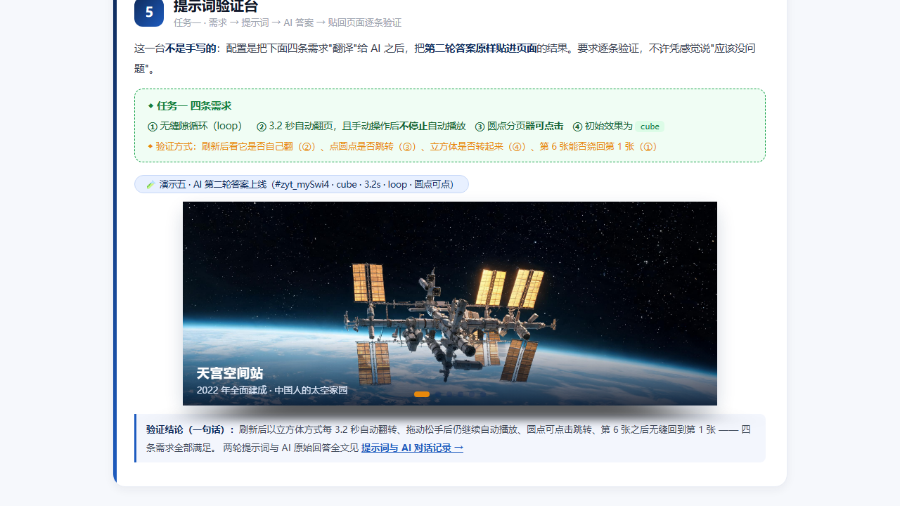
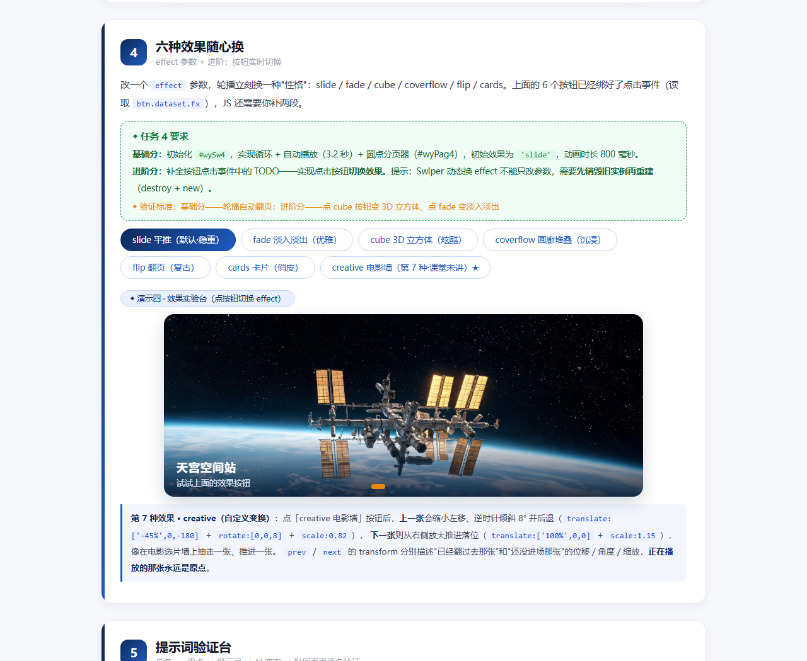

高 级 网 页 设 计 · 三 次 课 作 业
Swiper 提示词与 AI 对话记录 · 周怡彤
本页是三次课三大任务的过程留档 ：每一条提示词、AI 每一轮回答、我自己的验证结论都原样保留，方便老师抽查答辩时逐条对账。
姓名：周怡彤
学号：24002120118
使用大模型：DeepSeek-V4.1-Flash
建立时间：2026-11-11
任务一 · 提示词工程师
任务二 · creative 电影墙
任务三 · 综合创作 + 超纲
答辩速查
← 回到作品页
任务一 ★★ 提示词工程师：让 AI 听懂需求需求原文：① 无缝隙循环；② 3.2 秒自动翻页且手动操作后不停止；③ 圆点分页器可点击；④ 初始效果为 cube。目标产物是 new Swiper('#mySwi4', {...}) 的配置对象。
第 1 轮提示词（先说个"大概"，故意留坑）
帮我写一个 Swiper 初始化代码，容器 id 是 mySwi4，要循环，自动播放 3.2 秒，加圆点分页，初始效果用立方体。
new Swiper('#mySwi4', {
loop: true,
autoplay: 3200,
effect: 'cube',
pagination: { el: '.swiper-pagination' }
});
第 1 轮验证：两条需求没达标。
把答案贴进页面后发现：① 我用手拖了一下再松手，轮播就停住不自动翻了 ；② 圆点虽然出现了，但点了没反应 。
回头比对需求才发现——我的第一版提示词漏掉了"手动操作后不停止"和"圆点可点击"这两条，只说了"加圆点分页" ；
而 AI 又照着 Swiper 6 的老写法给了 autoplay: 3200 这种数字简写，Swiper 11 里它没法带 disableOnInteraction，默认就是"用户一交互就停"。
第 2 轮提示词（把漏掉的"说清楚"，并指定 API 版本与写法）
上一版有两个问题，请按 Swiper 11 的对象写法重写：
1）autoplay 必须是对象，delay 3200，并且用户拖动或点击之后自动播放不能停止（disableOnInteraction: false）；
2）pagination 的圆点必须能点击跳转，要写 clickable: true，el 用 '#mySwi4 .swiper-pagination' 明确归属；
3）loop: true 保持不变，effect 初始为 'cube'，并补上 cubeEffect 的默认阴影参数；
4）不要写多余的 CSS 或 HTML，只给我 new Swiper 的配置对象。
new Swiper('#mySwi4', {
loop: true, // ① 无缝隙循环
autoplay: {
delay: 3200, // ② 3.2 秒翻一页
disableOnInteraction: false, // ② 手动操作后继续自动播放
},
pagination: {
el: '#mySwi4 .swiper-pagination',
clickable: true, // ③ 圆点可点击跳转
},
effect: 'cube', // ④ 初始 cube
cubeEffect: {
shadow: true,
slideShadows: true,
shadowOffset: 24,
shadowScale: 0.92,
},
speed: 800,
});
第 2 轮验证结论（一句话）： 配置原样贴进页面后，刷新即自动以立方体翻转、每 3.2 秒一页、手动拖完松手继续自动播放、点第 5 个圆点能直接跳过去、第 6 张之后无缝回到第 1 张 —— 四条需求全部通过 。
验证现场就是作品页里的「演示五 · 提示词验证台」。

实测截图（Edge 无头浏览器抓取）：作品页「演示五 · 提示词验证台」，#zyt_mySwi4 以 cube 效果运行，四条需求逐条对照可见。点击可跳到 作品页对应区块 。
任务二 ★★ creative 仿写：课堂没讲的第 7 种效果课堂只讲了 slide / fade / cube / coverflow / flip / cards 六种，第 7 种是 creative（自定义变换）。我先读了本地官方示例 swiper/demo/257-effect-creative.html，再让 AI 帮我读懂 creativeEffect 的写法。
提示词（带着官方示例去问）
官方示例 257-effect-creative.html 里有 6 个 creativeEffect 配置，其中 prev 写的是 translate: [0,0,-400]，next 写的是 translate: ['100%',0,0]。
请解释：
1）prev 和 next 这两个 transform 分别控制哪一张幻灯片？
2）translate 数组三个值分别是什么轴？
3）我要做"电影选片墙"：上一张缩小、往左移、并且带一点角度；下一张放大、从右边推进来。请给我一组合适参数，并说明每个参数的作用。
4）transform 里的百分号是相对于谁的？
1）prev 控制"已经翻过去、停在左边的那张"，next 控制"还没进场、等在右边的那张"，正在播放的 active 那张永远在原点。
2）translate: [x, y, z] —— x 左右、y 上下、z 前后（负值后退，看起来变小）。
3）电影墙参数建议：
prev: { translate: ['-45%',0,-180], rotate: [0,0,8], scale: 0.82, opacity: .65, shadow: true }
next: { translate: ['100%',0,0], scale: 1.15, opacity: .9, shadow: true }
—— 上一张左移 45%、后退 180px（视觉变小）、绕 Z 轴倾斜 8°；下一张停在右侧画面外，带 1.15 倍放大推进来，形成"推向观众"的纵深感。
4）百分号是相对于幻灯片自身尺寸（swiper-slide 的宽/高），不是相对于外层容器。
追问：把角度改成 20 度会怎样？
你的参数里 rotate: [0,0,8] 是 8 度。如果我把最后一个值改成 20，页面上会看到什么变化？为什么是数组第三个值而不是第一个？
数组是 [rotateX, rotateY, rotateZ]。第三个值对应 rotateZ，也就是在屏幕平面内顺时针旋转，所以 8 → 20 后上一张卡片的倾斜角从 8° 变成 20°，斜得更明显（超过约 15° 就开始显得"歪"，20° 已经有明显的斜插感，如果不想要这种效果就调回 8~12°）。
想看"卡片立起来"的效果则要改第一个值 rotateX，改第二个值 rotateY 会得到绕垂直轴翻的 3D 效果。
验证结论（一句话）： 点作品页「演示四」第 7 个按钮「creative 电影墙」后，上一张确实缩小左移并带 8° 斜角、下一张放大从右侧推进落位；把 rotate 第三个值改成 20 再试，斜角明显变大，与预期一致。

实测截图：演示四共 7 个效果按钮，第 7 个即新增的「creative 电影墙（第 7 种·课堂未讲）★」，下方附 creative 参数拆解。点击可跳到 作品页对应区块 。
我自己的话总结（答辩用）
参数 它控制什么 prev.translate已经翻过去那张的位移：负 x 往左、负 z 后退（视觉变小） prev.rotate / scale那张的倾斜角度与缩放比例 next.translate还没进场那张的位置：'100%' 表示刚好停在右侧画面之外 next.scale进场前的放大倍数，1.15 让它"冲向观众"再落位 limitProgress往两侧最多叠加几张（2 表示只留两张，像选片墙）
任务三 ★★★ 综合创作 + 技术答辩① 第六件展品「爱达·魔都号」—— AI 生成横版 16:9 图片
提示词（用于文生图，中文需求 → 英文描述，明确写死 16:9 与"无文字水印"）：
Website hero banner photo for a Chinese science-and-technology exhibition gallery: a massive modern luxury cruise ship sailing on calm blue ocean at golden hour dusk, white hull with colorful abstract art livery on the bow, multi-deck superstructure with rows of glowing windows, bow wave with white foam, dramatic clouds and warm sunset light on the horizon, shot from a low aerial three-quarter angle, photorealistic, ultra detailed, cinematic wide composition, 16:9 landscape, no text no watermark
结果： 生成横版 16:9 图片一张（2560×1440），已存为 swiper-imgs/aida_modu.jpg；
slide 结构完整（图片 + 标题 + 一句说明），五个轮播全部补为 6 张，与原有五件展品风格统一。
AI 生成的第六件展品图片（2560×1440，16:9），已落地为 swiper-imgs/aida_modu.jpg，五个演示台的第 6 张幻灯片都用它。
② 超纲能力：keyboard 键盘控制（课堂没讲过）
Swiper 11 里怎么加键盘控制？我要在这个页面的演示二上加：点击轮播后按 ← → 能翻页，但页面别的地方按方向键不能误触发。请只给配置对象，并说明每个参数。
在初始化配置里加：
keyboard: {
enabled: true, // 开启键盘控制
onlyInViewport: true, // 只有轮播在视口内才响应，页面别处按方向键不会误翻
}
注意：键盘事件是绑在 swiper 容器上的，容器需要能获得焦点。Swiper 11 的 a11y 模块会自动给容器补 tabindex="0"，
所以用户点一下轮播之后按 ← → / PageUp / PageDown 就能翻页。
验证结论（一句话）： 点一下演示二再按 → 能切到下一张、按 ← 回到上一张，且页面滚动到下方其它区块后按方向键不会误翻 —— 通过。
答辩四连问 · 我的回答
问题 我的回答
这段代码什么意思？
keyboard.enabled 打开键盘模块，把方向键与 Swiper 的 prev/next 绑定；onlyInViewport: true 让它在不在视口内时不响应，避免影响整页滚动与其它交互。
AI 第一次给的哪里不对，你改了什么？
AI 第一次给的是 keyboard: true（Swiper 5/6 的旧写法），Swiper 11 需要对象写法，直接这样写不生效；另外它没提醒"要先让容器获得焦点"。我改成对象写法并补上了 onlyInViewport，同时在页面上加了"先点一下轮播"的提示。
新参数的作用？
onlyInViewport：只有轮播出现在视口内时才响应键盘，防止用户在页面别处按方向键把看不见的轮播翻掉；enabled：总开关。
现场把 delay 改成指定值，解释预期变化
把演示五（或演示四）的 autoplay.delay 从 3200 改成 1500：翻页间隔从 3.2 秒缩短到 1.5 秒，节奏明显变快；因为 disableOnInteraction: false 没变，手动拖动后仍会继续按 1.5 秒自动翻。改成 0 或负数则自动播放会立即连续触发，几乎无法看清画面。
速查 三个任务的关键参数一览
任务 关键代码 一句话作用 任务一 ① loop: true最后一张之后无缝接回第一张 任务一 ② autoplay: { delay: 3200, disableOnInteraction: false }3.2 秒自动翻页，手动操作后不停 任务一 ③ pagination: { el, clickable: true }圆点可点击跳转 任务一 ④ effect: 'cube'初始立方体效果 任务二 effect: 'creative' + creativeEffect.prev / .next自定义上一张 / 下一张的位移、角度、缩放 任务三 ① AI 生图 + 完整 slide 结构 第六件展品「爱达·魔都号」 任务三 ② keyboard: { enabled: true, onlyInViewport: true }键盘 ← → 翻页，仅视口内生效
高级网页设计 · 三次课作业 · 周怡彤 24002120118 · 2026-11-11